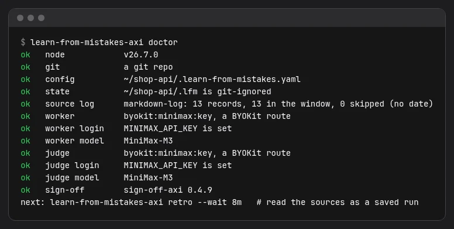
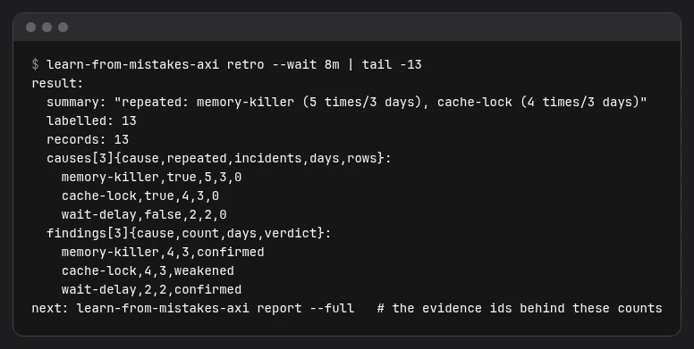
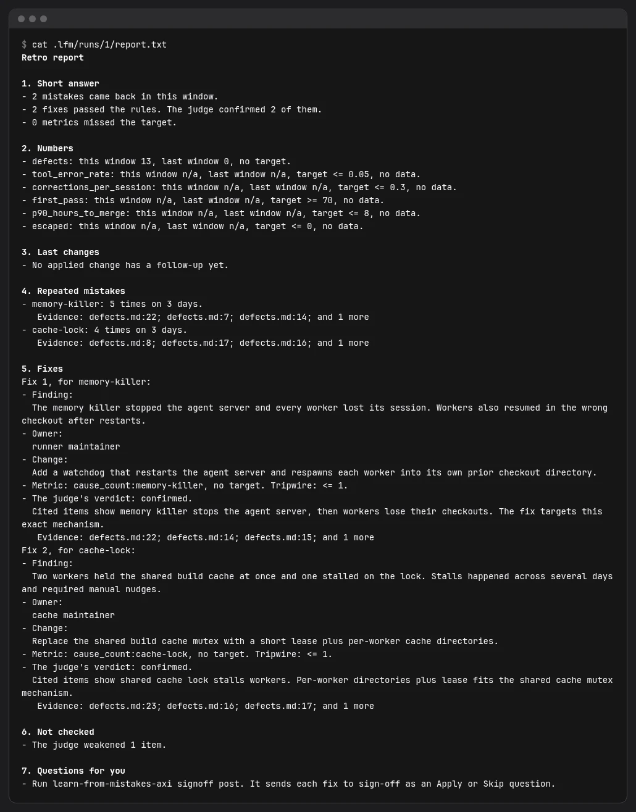

Find the mistakes your coding agents keep repeating.
A saved retro over your defect logs, failed checks and agent sessions: repeated causes with counts, the evidence for each, and a short list of changes that a judge has checked.
Install in 3 stepsInstall in 3 steps
Install
npm install -g learn-from-mistakes-axi
Set up
cd /path/to/your/project learn-from-mistakes-axi init --no-skill learn-from-mistakes-axi doctor
Run and read
learn-from-mistakes-axi retro --wait 8m learn-from-mistakes-axi report
Needs Node 22.13 or later and an agent you have signed in to, with a model you choose, for each of two roles. A worker reads the records and names findings; a judge checks each finding and each fix. Nothing runs without them, and nothing changes in your project unless you ask.
What you get
Counts, not guesses
Repeated causes with how many times they came back and on how many days. Records the worker did not read stay unlabelled.
Evidence for each
Every finding cites the records behind it. A judge confirms, weakens or refutes it before it reaches the report.
Fixes you can check
Each kept fix names an owner, a change and a metric with a tripwire. The next retro tells you if it worked.
A real run

doctor checks config, sources, state and both agents before a retro starts. No model call.
retro counts repeated causes and lists the findings the judge confirmed.
report.txt: a short answer, numbers, repeated mistakes with evidence, checked fixes, what was not checked, and questions for you.These shots come from a run of the packed CLI on a small sample defect log, with scripted stand-ins for the two agents and the project path shortened. They show the shape of the output, not what a hosted model would say about your project.
Alone, or with the family
Each tool works on its own, with or without the others and with or without an agent supervisor. They meet through small written contracts.
sign-off
The board where agents ask you questions. signoff post sends each kept fix there as an Apply or Skip choice.
done-done
Proof that the real product works. A done-done source reads its failed verify runs as retro records.
first-draft
Design mock-ups for review. They land on the same sign-off board, next to the retro's questions.
Inside Firstmate, add init --firstmate <home> to read its status logs and messages. Outside it, nothing changes: Firstmate is opt-in.